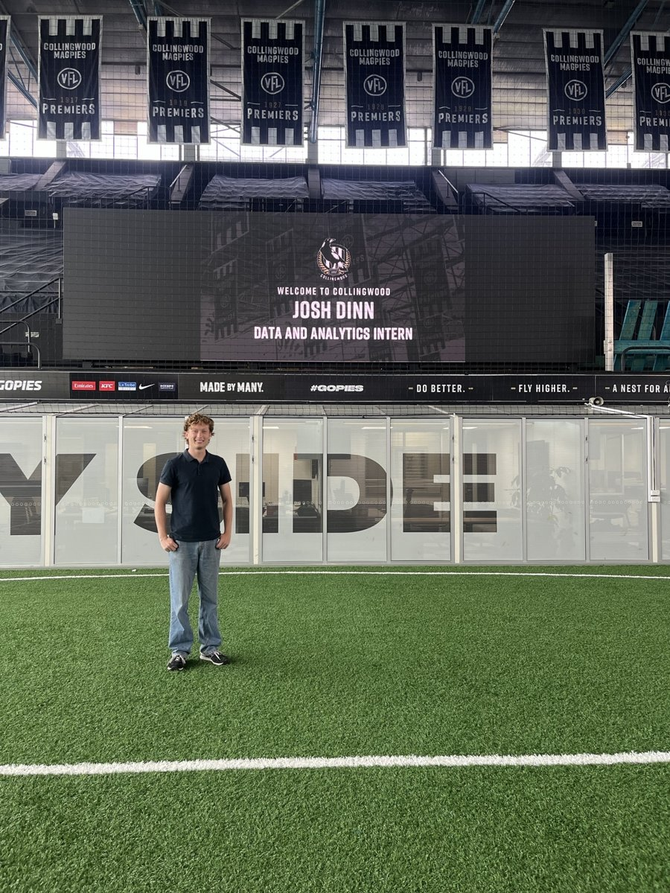

Open to 2026/2027 internships · Melbourne, Australia
$cat about.txt
Software Engineering & Econometrics student at Monash University. I love
solving problems with statistics and machine learning, and I like doing it
with a team.
I've always loved numbers, the kind that make you want to sit down and
actually solve something. I'm doing a dual degree in
Software Engineering and Econometrics at
Monash, chasing statistics, machine learning, and problems that don't have a
clean answer yet.
At Monash DeepNeuron I built on-device AI memory systems and
taught C++, CUDA, and high-performance computing alongside NVIDIA and the
Pawsey Supercomputing Centre. On the quant side I've built trading systems,
volatility models, and churn-prediction pipelines, most recently interning in
Data, Analytics and Technology at the Collingwood Football Club.
Outside class I like picking something hard and working through it end to
end, usually with other people if I can. Right now that's
JackTen, a poker bot built from the math up (equity and EV
first, Bayesian range updates now, deep learning for opponent modelling next),
and a vector database I'm building in C++ to properly
understand what's happening under an ML pipeline. Different problems, same
thing pulling me in: stats, numbers, and figuring out what actually works.

Collingwood Football Club · Data, Analytics and Technology intern
Languages
C++
Python
TypeScript
JavaScript
Java
SQL
MATLAB
R
Cloud & Tools
AWS
MongoDB
Git
Data & Quant
pandas
NumPy
PyTorch
XGBoost
Snowflake
OxMetrics
React
Node.js
experience.log
Roles & teams
A mix of engineering, applied AI, and quantitative analytics, across research teams, industry, and teaching.
[Sep 2025 – Present]Monash DeepNeuronOptimised Computing Member
Building an on-device AI memory system for AR glasses: a vector database with HNSW indexing and approximate nearest-neighbour search powering a low-latency retrieval-augmented generation (RAG) pipeline.
Teaching Assistant for an 8-week C++ and accelerated-computing workshop on GPU programming, CUDA, and HPC, run with NVIDIA, the Pawsey Supercomputing Centre, and NCI.
Run in-person sessions teaching students and staff how to use AI effectively, ethically, and in everyday study and work.
Helped deliver a university webinar on AI to an audience of 200+ attendees.
[Mar 2026 – Jun 2026]Collingwood Football ClubData, Analytics and Technology Intern
Built an XGBoost churn-prediction model that flags at-risk members for the commercial team, engineering the feature pipelines from historical transaction and engagement data.
Created an interactive dashboard breaking down churn drivers with SHAP feature importance for commercial stakeholders.
Designed a repository-synchronisation workflow between the club's web and mobile codebases to streamline deployments.
[Jun 2024 – Dec 2025]Outlier AIAI Trainer · Mathematics
Evaluated AI model outputs on advanced mathematics, checking logical correctness and technical clarity in LaTeX.
Wrote structured feedback on reasoning and formatting that fed back into improving model output quality.
A vector database built from scratch in C++20 to index and search
high-dimensional AI embeddings, with every claim backed by a real benchmark
harness (recall@k, QPS, latency percentiles) instead of one eyeballed number.
The brute-force baseline and harness are done; HNSW graph indexing, AVX2 SIMD
distance kernels, a gRPC service layer, and Raft-backed sharding across
containerised nodes are next.
A no-limit hold'em strategy engine, built from the math up rather than from a
library. The roadmap runs hand evaluation and equity first, then the EV, pot
odds, and minimum-defense-frequency formulas that drive every decision, then
Bayesian range updates and opponent stats (VPIP, PFR, 3-bet%) for exploitative
play. I'm currently through the equity and EV layers. Next up is deep learning
for opponent behaviour: sequence models (LSTM and, if the data supports it,
transformer-based) trained on hand-history action sequences to predict
opponent tendencies and ranges, feeding into the same Bayesian updates rather
than replacing them.
A real-time platform that runs a full mock technical interview end to end: live
speech-to-text, a GPT-4o Realtime AI interviewer, and an in-browser Python editor
with instant execution. Each submission is auto-graded against test cases and scored
by an AI reviewer on correctness, communication, and approach, with a diff timeline
replaying every change. I engineered the low-latency pipeline that streams
transcription, conversation, and code concurrently so the session never blocks, then
shipped it with a 3-person hackathon team on a Vercel, Render, and MongoDB Atlas stack.
A mobile augmented-reality assistant for "smart glasses" with a photographic-memory
feature. Walk around with your phone's camera and mic, ask questions about your
surroundings, and recall saved "memories" later just by asking. Gemini 2.5 Flash
handles fast vision and embeddings; a local vector database gives semantic recall,
with Whisper and TTS streamed over SSE for low latency.
A Python pathfinding platform with three modes (play, watch, and race) visualising
seven algorithms (A*, BFS, DFS, Greedy, wall-follower, and random walks) across
procedurally generated mazes. Backed by a serious testing framework: property-based
testing with Hypothesis, visual snapshot tests, and performance benchmarking over
125,000+ simulated runs.
A study applying a GARCH(1,1) model to a decade of S&P 500 daily log returns to
capture time-varying volatility and clustering. Fitted by maximum likelihood and
validated with Ljung-Box and ARCH-LM diagnostics, then used to forecast conditional
variance 100 days ahead, automating the full data, evaluation, and reporting pipeline
in Python.
My first end-to-end live trading bot, built to learn the full pipeline. It uses a
Hidden Markov Model to classify S&P 500 market regimes from daily data, combines
RSI, ATR, and volatility signals into position sizing and trade logic, backtests the
strategy, and deploys to a Linux VPS via AWS Lambda and the Alpaca API for automated
paper trading.